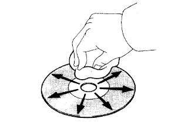

Disk used
This player can only be used for music CDs, CD-R (CD-RECORDABLE) and CD-RW (CD-REWRITABLE).

Precautions for using disk
- ■ Attention ■
- Copy control CDs cannot be used.
- DualDiscs (CDs and DVDs are attached to the front and back) cannot be used.
- DTS-CD cannot be used.
- CD-text cannot be used.
- CD-R and CD-RW may not be able to be regenerated due to record status, disk characteristics, scratches, dirt, and long-term deterioration in the indoor environment.
- CD-R and CD-RW that are not finely processed cannot be played.
- The disk is handled so as not to add fingerprint, dirt and scratches.
- When handling the disk, hold the center hole and end, and raise the label surface.
- If you press the disk removal button and leave the disk protruding for a long time, the CD may be deformed and you may not be able to use it.
- If you use cellophane tape, sticker, CD-R label, rental CD label, etc., or use a disc after peeling, you may not be able to take out the disk or cause equipment failure.be.
- The disk is stored in avoiding direct sunlight.(Because the disk is deformed and may not be available)
- Disks other than circulars with a diameter of 12cm or 8cm cannot be played.
- A special shape disk is not used because it causes the device failure.
- A disk with a transparent or translucent part on the record is not used because it may not be possible to put in and out normally.
- No adapter is required when playing a single CD (8cm).
- □ Participation □
- When it is cold or rainy, there may be dew (water drops) inside the player, so that the glass inside the car becomes cloudy.In this case, the sound will fly or the playback will stop, so it will be used after ventilation or dehumidification for a while.
- If the player vibrates violently due to a bad road driving, the sound may fly.
|  |
cleaning
- ■ Attention ■
- Do not use a lens cleaner, as it may cause a failure of the player pickup portion.
The dirt on the disk is a soft and dry cloth such as glasses for plastic lenses.
- ■ Attention ■
- Pressing strongly by hand or rubbing with a hard cloth may damage the surface.
- Using a solvent such as record spray, antistatic agent, alcohol, benzine, and thinner, or chemicals, etc., the disk may be damaged and cannot be used.